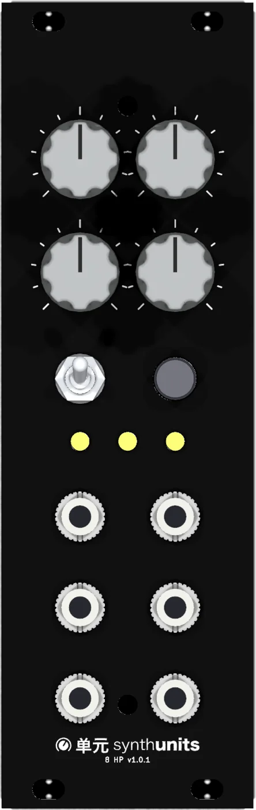
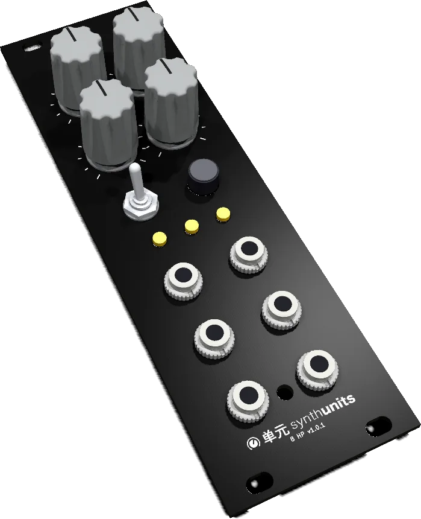
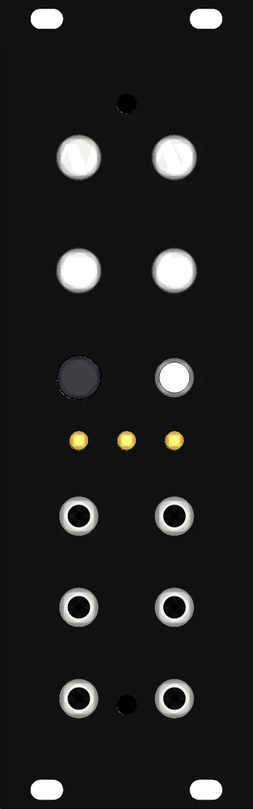

Universal panel: every hole, no names
An 8 HP Eurorack panel with a hole for every place on the minimodules' shared layout, to fit any of them.
The minimodules' universal front panel: Eurorack 3U, 8 HP, with a hole for every place on the layout all the minimodule panels share. Four pots, a toggle and a button, three LEDs and six jacks, the four mounting slots, and two holes for the printed sled that holds a module behind it.
It carries no names, only the pots' scales and the synthunits mark. Any of the minimodules mounts on it: the holes a module doesn't use get printed caps, and the module's legends can be laser-engraved. It is made like a circuit board, but with no copper: black solder mask and white silkscreen on plain FR4. Not built yet.
- Status
- Being made
- Version
- v1.0.1 (2026-10-25)
- Board
- 40.34 × 128.5 mm, 2 layers
- First order
- 10 bare boards
- Progress
- follow its tracking issue



What it does
- Eurorack 3U, 8 HP: 40.34 × 128.5 mm.
- Holes for four pots (7.2 mm), a toggle (6.2 mm), a button (7.2 mm), three LEDs (3.2 mm) and six jacks (6.2 mm).
- Four mounting slots, and two M3 holes 95.5 mm apart for the printed sled.
- Made as a PCB: 1.6 mm FR4, black solder mask, white silkscreen, no copper.
- Printed: the pots' scales and the synthunits mark, with 8 HP and the version under the logo.
Wiring and setup
- The panel parts mount on the panel. The module sits behind it on a printed sled screwed to the two M3 holes, and PH leads join the parts, or their breakouts, to the module's connectors.
- Any of the first five modules (VCO, ADSR, VCA, VCF, MIX) mounts on it, and so does the op-amp minimodule.
- Cap the holes a module doesn't use with printed caps in black.
- A module's legends can be laser-engraved onto it; each module's own panel is drawn to line up with these holes.
Limits and open questions
- Not built yet.
- The printed sled and the hole caps aren't drawn yet.
- The button breakout needs a printed holder to keep the button square in its hole; also not drawn yet.
Development notes
- All the minimodule panels share one 8 HP layout: two rows of pots, a switch row, three LEDs, three rows of jacks. Each module uses the places it needs and leaves the rest out.
- That way I can make a few named panels for each module and the rest from universal ones, capped and engraved.
Would you use a UNIVERSAL? A thumbs-up on its tracking issue is how I count interest, and you can subscribe there to follow its bring-up. Questions and ideas go to the discussions.